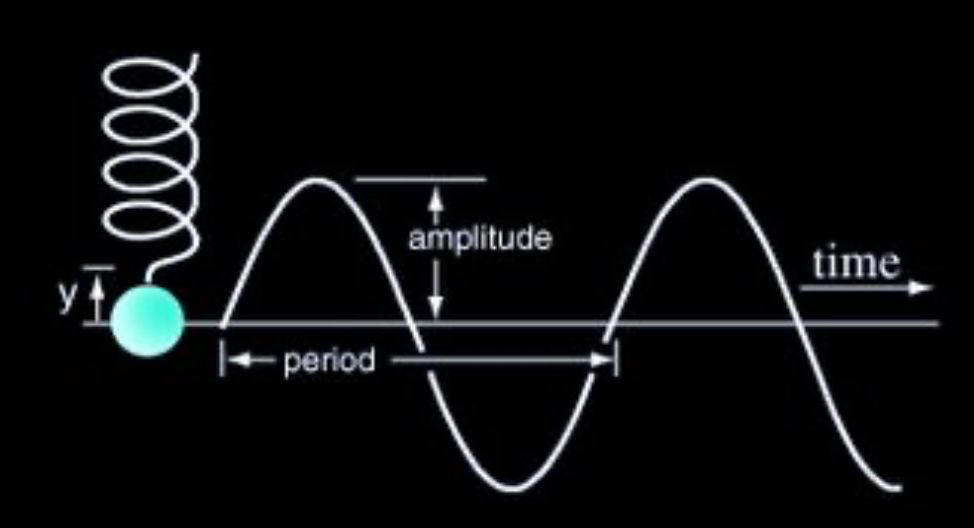

Simple Harmonic Motion is a type of oscillatory motion where the restoring force is directly proportional to displacement and always acts towards the equilibrium position.
In other words, if you pull a spring or a pendulum from its resting point, it’ll try to return — and if there’s no energy loss, it’ll keep going back and forth!
\( F = -kx \)
\( a = -\frac{k}{m}x = \omega^2 x \)
x = displacement
\( \omega \) = angular frequency
k = spring constant
m = mass of the object
Angular Frequency (\( \omega \))
Angular frequency tells us how fast the object is oscillating in terms of angle per second.
\( \omega = 2\pi f = \sqrt{\frac{k}{m}} \)
f = frequency (in Hz)
\( \omega \) = angular frequency (in rad/s)
This is used in formulas like:
\( x(t) = A \cos(\omega t + \phi) \)
\( v(t) = -A\omega \sin(\omega t + \phi) \)
\( a(t) = -A\omega^2 \cos(\omega t + \phi) \)
Important Terms
Amplitude, A – Maximum displacement from the equilibrium
Period, \( T = \frac{2\pi}{\omega} \)
Frequency, \( f = \frac{1}{T} \)
Angular frequency, \( \omega = 2\pi f \)

Examples of SHM
A mass on a spring
A pendulum (small angles only!)
An oscillating tuning fork
A floating object in water (vertical SHM)
Energy
Energy of a simple harmonic motion can be written as
\( E = \frac{1}{2}kx^2 \)
Learn how to use energy:
\( E = \frac{1}{2}kA^2 = \frac{1}{2}kx^2 + \frac{1}{2}mv^2 \)
• Be comfortable switching between force, energy, and acceleration forms.
• Understand when SHM doesn’t apply (e.g. damping, large angles in pendulums).
A block of mass 0.5 kg is attached to a horizontal spring with spring constant k = 200 N/m.
Find the angular frequency \(\omega\), frequency f, and period T.
If the amplitude is 4 cm, what is the maximum speed?
A block is attached to two identical springs (spring constant k) on a frictionless surface (one on the left, one on the right). When pulled slightly and released, it undergoes SHM.
Find the effective spring constant.
Derive the angular frequency.
(a) Both springs pull toward equilibrium when displaced. Assume
Mass of the block = m
Displacement from equilibrium = x
When the block is displaced by x, both springs are stretched or compressed by the same amount x, and each exerts a force F = -kx toward the center.